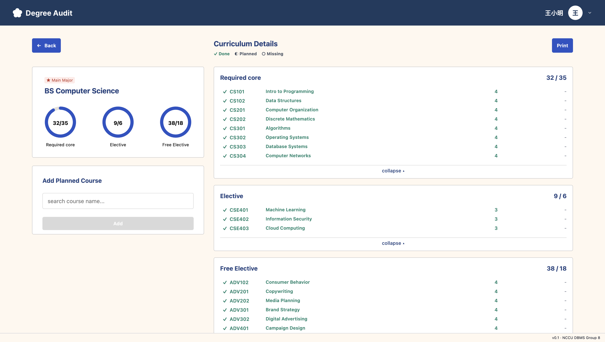
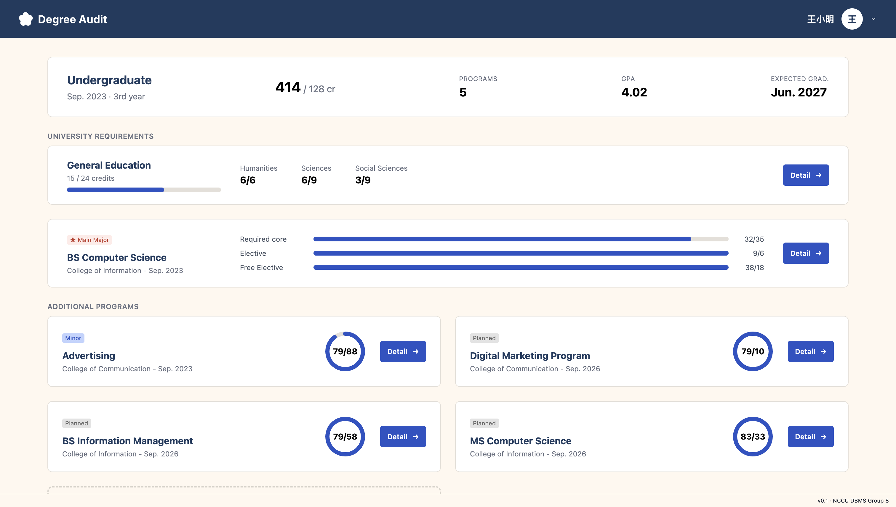

Background
Course: Database System
For our “Database System” course at NCCU, our team built a Graduate Credit Audit System to verify academic requirements for graduation. The platform simplifies degree auditing by connecting a relational database with a web dashboard, allowing students to easily track their progress and check their graduation eligibility.
Tech Stack
React, TypeScript, Vite, Tailwind CSS, Zustand, Python, PostgreSQL, SQLAlchemy, Docker
Project Repository
System Architecture & Features
Built from the ground up, this system focuses on a comprehensive relational database design and seamless full-stack integration.
-
Relational Database Design

- Designed a relational schema in PostgreSQL, covering core entities such as users, students, academic programs, courses, and complex requirement rules.
- Leveraged SQLAlchemy as the Object-Relational Mapper (ORM) to execute complex queries and maintain strict data integrity.
-
Full-Stack Implementation
- Developed a Python-based backend that exposes RESTful APIs for efficient data retrieval and degree rule evaluation.
- Built a responsive and intuitive user dashboard using React and TypeScript.
-
Deployment & Testing
- Containerised the application using Docker, orchestrating a multi-container environment (backend, frontend, database, db-init) via Docker Compose.
- Implemented automated database initialisation and data seeding scripts to guarantee consistent development and testing workflows.
My Contributions
-
UI/UX Design
- Led the UI/UX design, crafting an intuitive and user-centric web dashboard tailored for academic auditing.


-
ER Model Design
- Designed the comprehensive Entity-Relationship (ER) model, establishing the foundational data structures and complex entity relationships required for the degree audit logic.
-
Frontend Architecture & Implementation
- Led the frontend development using React and TypeScript.
- Designed and enforced rigorous TypeScript interfaces, ensuring type safety and reducing runtime errors across the application.
- Structured a scalable and maintainable component directory architecture:
frontend/src/ ├── pages/ # Contains all application pages with respective Page.tsx and styles. ├── components/ # Contains reusable UI components. └── App.tsx # Main application component, handles the routing configuration.